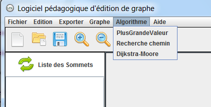

Les algorithmes de parcours de graphe
 Pour lancer un algorithme, cliquer sur "Algorithme" dans le menu.
Les algorithmes ne peuvent se lancer que sur des graphes valués.
Il faut au minimum deux sommets et un arc pour lancer les algorithmes.
Algorithme de plus grande valeur
L'algorithme de plus grande valeur va chercher dans le graphe l'arc ayant la plus grande valeur.
A la fin de la recherche la plus grande valeur trouvé est affiché dans une fenêtre information.
Algorithme de recherche de chemin
L'algorithme de recherche d'un chemin, cherche la longueur d'un chemin entre deux sommets.
Selectionner le sommet de départ et le sommet d'arrivé et cliquer sur "Valider"
A la fin de la recherche, un fenêtre vous informe de la valeur trouvée.
Algorithme de Dijkstra-Moore
L'algorithme de Dijkstra-Moore recherche les chemin les plus courts pour aller du sommet séléctionner à tous les autres sommets. Selectionner le sommet de départ et cliquer sur "Valider". Au fur à mesure de l'exécution de l'algorithme, un tableau affiche l'avancement de la recherche. A la fin de l'exécution, une fenêtre affiche les résultats finaux.